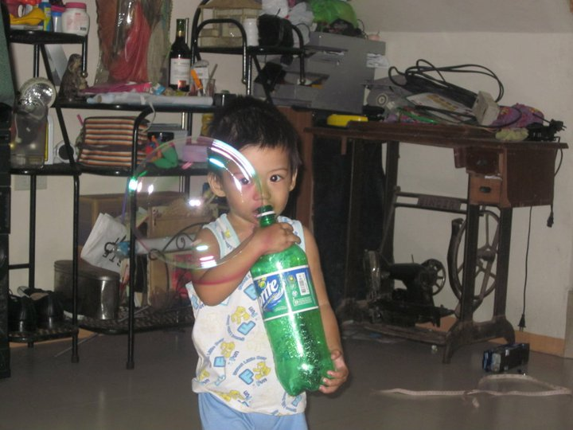
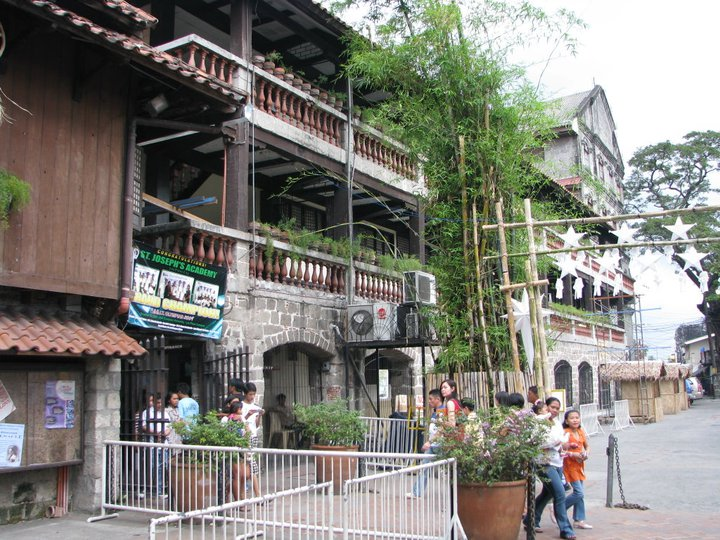
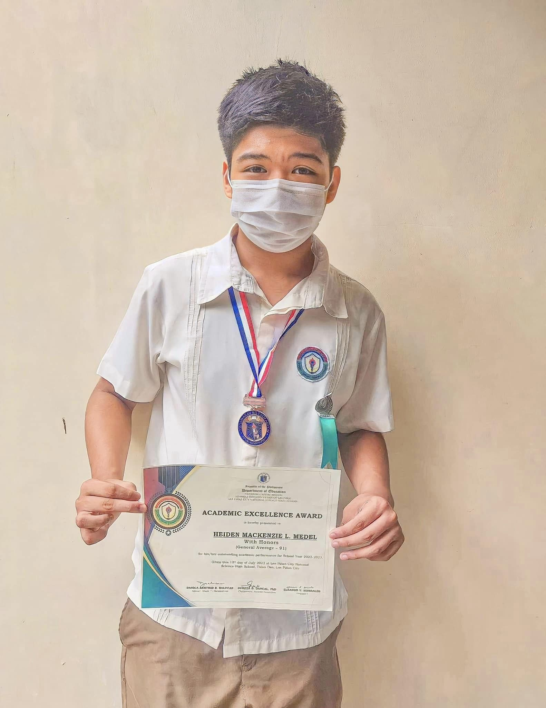
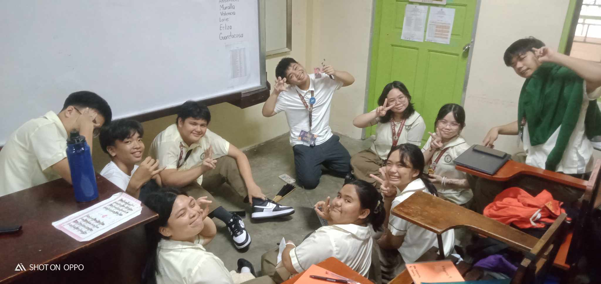
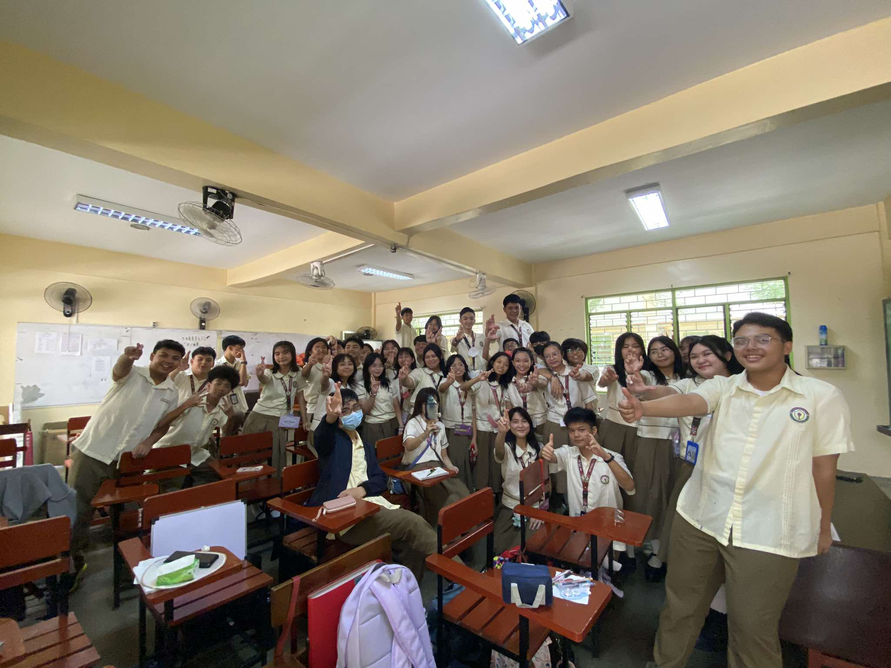
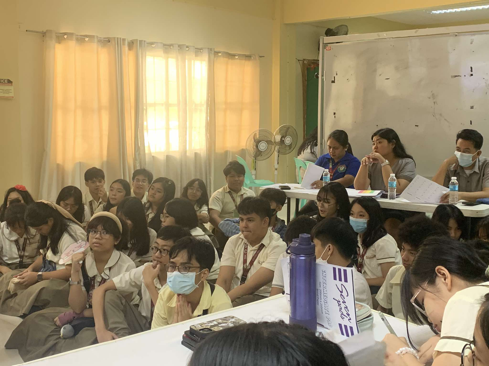
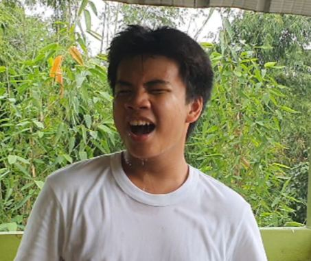
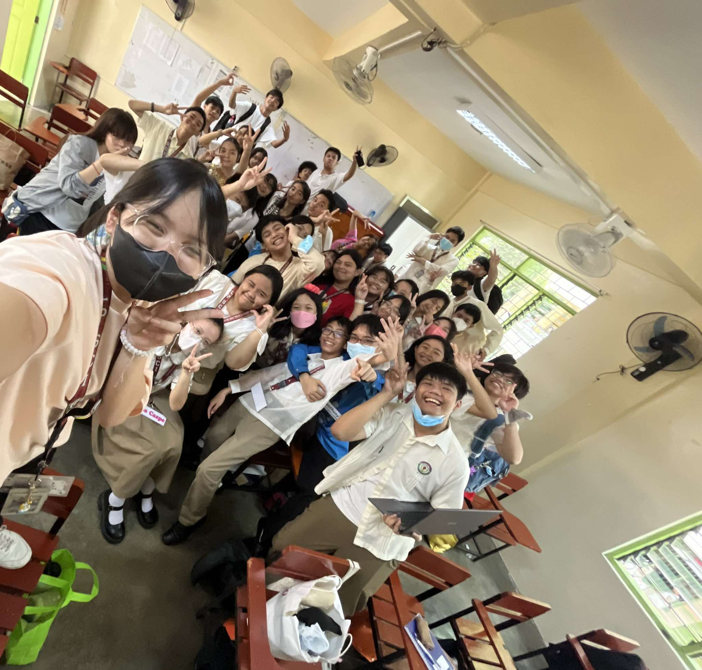

- All About Me
- The Opening Statement.
- Name: Heiden Mackenzie L. Medel
- Date of Birth: June 21, 2009
- Age: 15
- Hobbies:
- Gaming (Obviously)
- Storywriting
- Tinkering
- Modding
- Emails: heidenmedel5@gmail.com or storiesimakewhenimbored@gmail.com
- Facebook Account: Heiden Mackenzie Medel
- Discord Account: .kenizi
- School: Las Pinas National Science High School
- Club(s): None (I couldn't join lol)
- Grade: Grade 9, Family
- Before School
- Preschool and Grade School
- High School
- First Quarter Activities
- ICT Works
- My Reflection
The Portfolio of My Own
Made by Heiden Mackenzie L. Medel of 9-Family
Hi! It's me Heiden. Wow... 15 years of my life huh? Three more years before I inevitably reach adulthood? Crazy thought to be honest. I mean look, time flies fast. I'm already Grade 9 and I still don't know half the things I'm doing, but that is the beauty of this stage we call life, not knowing what you're doing until the very end where you look at yourself and say "Wow, so this is me." Before we continue let me put just a list of things about me.
A Little Summary
Yeah that's mainly the summary about me. Of course I'll be going through all of them. My name is Heiden Mackenzie L. Medel, as I stated, but I go by a lot of names. In LPSci I get called as "Heiden", "Kuya", "30yearoldman", and so much more. In online applications I also go by a few names (aside from my usernames of course.) Izi is what my old compmates call me. It's a little cringe, I know, but the origins was from a bird in the K-Drama TV show
Vincenzo, Kenz is in a very casual gaming scenario, it came from Mackenzie.
I was born in June 21, 2009 so I am 15 as of writing. My hobbies are gaming, I usually play strategy games or first person shooters. I don't mean to loathe but I am kinda good. Storywriting, I like writing fictional stories of fictional people as a little leisure time. Tinkering with things, whether software or hardware (yes I did break a few things in the process.) Modding games, cause y'know having funny things is funny.
|
 |
I don't remember much about my childhoood, of course I'll blame my habit of forgetting everything. However, my relatives would always tell me that I had a facination for technology. I was a late speaker but I already knew how to read. My uncle always tells me that whenever he worked on a desktop, I'd voluntarily sit on his lap and start moving the mouse (of course being a mere toddler I'm pretty sure I didn't know what I'm doing), he also tells me that I knew how to shut down a laptop or desktop, provided it's a Windows OS. Oh, even till now, I love softdrinks.
|
|
Ah, Saint Joseph's Academy. A Christian private school where I became a learner. Of course there's the outlier of Pulanglupa Elementary School but we'll get into that later on. |
 Me singing in choir, Holy Week at 1 AM |
|
 |
...and so I end up at LPSci, where I currently study as a ninth grader. In all truth and honesty, if I were to pick to go back to Saint Joseph, I would gladly stay here instead. I think this is the best school I've been so far, it's more advanced than the others. There is a lot of struggles and triumphs that I had, and I expect more in the future. However, that's life, I guess. |
First Quarter Activities. I'd like to apologize at the earliest stop, I don't take a lot of pictures. Most of the pictures I'll be sending here is quite literally just taken by someone else.
Here are the said images! |
|
Edukasyon Sa Pagpapakatao Performance Task (Lipunang Sibil.) First ever picture of Family. Wahoo! We watched a debate. |
A snippet in our Mapeh Music Video. Suspended in the middle of Science. |
All of the works I did related to our ICT time. Yes, these were all the "surprises" that you had for us.
Okay, so that was first quarter. Not too hard, it's just HTML to be honest. I feel like the hard topic is Javascript cause bunch of if-then statements and confusing syntaxes and more!
Honestly, I just really suck at written works. I don't know why but I get less than expected grades in quizzes and such. I really don't know, I guess this is my curse in ICT. Oh let me explain the curse, basically I get really high grades in Performance Tasks, average grades in Written Works, and a 42 in Periodical. It's funny how the 42-rule is shared by Sofie and Eon (most of the time.)
I really feel like that Grade 9 is my wake-up call to redemption. It's a whiplash because it's harder than Grade 8. However, I do see myself improving in Grade 9. Honestly, I was so mid in Grade 8 that it set a very low preccedent for my Grade 9 me. #redemptionarc
I've realized that even with all of the maharlika that I've been doing, I'm pretty lucky to be here. I have a lot of friends, in a prestigeous science high school! I like it here, I wouldn't trade it for anything else.
Honestly. I'm excited for the following quarters. Look, with whatever the curicullum is throwing at us right now, it's about to be a very hellish banger!
Seems like this is the end of the main page, you can look at the extra content, but Himitsu signing off!